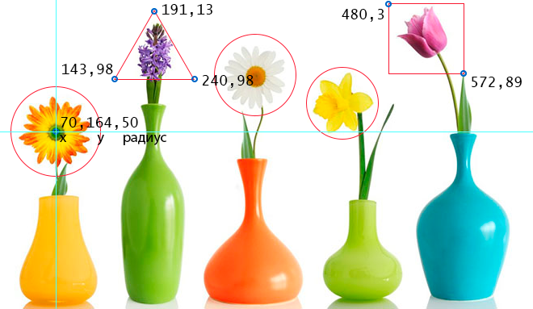

Для отображения картинки, на странице сайта, используется тег <img>. Если на том или ином сайте необходимо расположить какие-либо графические элементы, то для этого нужно использовать такие форматы, как *.jpeg, *.png или *.gif. Эти форматы поддерживаются абсолютно всеми распространенными браузерами.
Так же можно использовать форматы: *.apng, *.svg, *.bmp, *.ico
Для того, чтобы отобразить графику в других форматах, зачастую требуется использовать различные специальные средства.
Все файлы изображений, используемых на WEB-страницах, обычно хранятся в папках, которые имеют имена «img» или «images». В тех случаях, когда речь идет об изображениях, формирующих дизайн сайта, то для них лучше предусмотреть специальную папку например – «design».
<img src="URL" width="150" height="150" alt=""><img src="URL" width="150" height="150" alt="" />Чтобы средствами HTML можно было изменять размеры рисунков, тег <img> имеет такие атрибуты, как heigh (высота) и width (ширина). Для указания их значений применяются пиксели, причем таким образом, чтобы сами аргументы совпадали с теми физическими размерами, которые имеет картинка.
В коде HTML в обязательном порядке следует задавать размеры, которые имеет картинка. Благодаря этому ее загрузка несколько ускорится, поскольку браузер заблаговременно будет располагать информацией о том, какой размер будет иметь изображение. Это позволит ему производить загрузку другого содержимого страницы не дожидаясь того момента, когда изображение загрузится полностью.
Можно вращать изображение или отразить его по горизонтали с помощью нового свойства image-orientation.
img {image-orientation: flip;} /* отразить изображение по горизонтали */
img {image-orientation: 90deg;} /* повернуть изображение на 90 градусов по часовой */| alt | Чтобы создать альтернативный текст, следует применять атрибут alt для тега <img>. Альтернативный текст необходим для того, чтобы картинки были обозначены некоей текстовой информацией в тех случаях, когда в браузере показ изображений отключен, или же на период их загрузки. По его содержанию можно судить о том, что изображено на картинке, причем появляется он до ее загрузки. После того как загрузка картинки завершена, альтернативный текст исчезает. |
| crossorigin |
Атрибут crossorigin позволяет загружать изображения с ресурсов другого домена с помощью CORS-запросов. Изображения, загруженные в холст с помощью CORS-запросов, могут быть использованы повторно. Допускаемые значения:anonymous - cross-origin запрос выполняется с помощью HTTP-заголовка, при этом учетные данные не передаются. Если сервер не даёт учетные данные серверу, с которого запрашивается контент, то изображение будет испорчено и его использование будет ограничено. use-credentials - cross-origin запрос выполняется с передачей учетных данных. |
| height | Атрибут height задает высоту изображения как в пикселях, так и в процентах. В первом случае размер изображения не зависит от разрешения экрана и всегда будет постоянным, а во втором он будет меняться в зависимости от разрешения экрана.
|
| ismap | Атрибут ismap указывает на то, что картинка является частью изображения-карты, расположенного на сервере (изображение-карта - изображение с интерактивными областями). При нажатии на изображение-карту координаты передаются на сервер в виде строки запроса URL-адреса. Атрибут ismap допускается только в случае, если элемент <img> является потомком элемента <a> с действительным атрибутом href.
|
| longdesc | URL расширенного описания изображения, дополняющее атрибут alt.
|
| src | Для того чтобы на WEB-страницу добавить изображение, следует использовать тег <img>. Он должен сопровождаться атрибутом src, который определяет тот адрес, по которому размещен графический файл. В тех случаях, когда файл располагается в одной папке со страницей, то его адрес можно не указывать. Достаточно просто имени и расширения графического файла. |
| sizes |
Задаёт размер изображения в зависимости от параметров отображения. Работает только при заданном атрибуте srcset. Значением атрибута является одна или несколько строк, указанных через запятую. |
| srcset |
Создаёт список источников для изображения, которые будут выбраны, исходя из разрешения экрана. Может использоваться вместе или вместо атрибута src. Значением атрибута является одна или несколько строк, разделенных запятой.
|
| title | Эта подсказка, как правило, применяется для того, чтобы при наведении курсора мышки на картинку появился краткий комментарий к ее содержанию. Чтобы добавить всплывающую подсказку, используют параметр title тега <img>. Его значением является заключенный в кавычки текст.
|
| usemap | Атрибут usemap определяет изображение в качестве карты-изображения. Значение обязательно должно начинаться с символа #. Значение ассоциируется со значением атрибута name или id тега <map> и создает связь между элементами <img> и <map>. Атрибут нельзя использовать, если элемент <map> является потомком элемента <a> или <button>. |
| width | Атрибут width задает ширину изображения как в пикселях, так и в процентах. В первом случае размер изображения не зависит от разрешения экрана и всегда будет постоянным, а во втором он будет меняться в зависимости от разрешения экрана.
|
Элемент <map> (от англ. map — карта) служит контейнером для элементов <area>, которые определяют активные области для карт-изображений. Такие области устанавливают невидимые зоны на изображении, являющиеся ссылками на HTML-документы. Цель использования <map> — в связывании элемента <img> с клиентской картой-изображением. Эта связь определяется применением единого идентификатора как в <img>, задаваемого атрибутом usemap, так и в <map>, устанавливаемого атрибутом name.
<img src="url" usemap="#имя_карты">
<map name="имя_карты">
<area>
</map>Элемент <map> содержит ряд элементов <area>, определяющих интерактивные области в изображении карты.
Тег <area> описывает только одну активную область в составе карты изображений на стороне клиента. Элемент не имеет закрывающего тега. Если одна активная область перекрывает другую, то будет реализована первая ссылка из списка областей.
<map name="имя_карты">
<area атрибуты>
</map>| alt | Задает альтернативный текст для активной области карты. | ||||||||||||||||||||||
| coords | Определяет позицию области на экране. Координаты задаются в единицах длины и разделяются запятыми:
для круга — координаты центра и радиус круга;
Также рекомендуется указывать последние координаты, равные первым, для логического завершения фигуры.для прямоугольника — координаты верхнего левого и правого нижнего углов; для многоугольника — координаты вершин многоугольника в нужном порядке: | ||||||||||||||||||||||
| download |
Дополняет атрибут href и сообщает браузеру, что ресурс должен быть загружен в момент, когда пользователь щелкает по ссылке, вместо того, чтобы, например, предварительно открыть его (как PDF-файл). Задавая имя для атрибута, мы таким образом задаем имя загружаемому объекту. Разрешается использовать атрибут без указания его значения. | ||||||||||||||||||||||
| href | Указывает URL-адрес для ссылки. Может быть указан абсолютный или относительный адрес ссылки. | ||||||||||||||||||||||
| hreflang |
Определяет язык связанного веб-документа. Используется только вместе с атрибутом href. Принимаемые значения — аббревиатура, состоящая из пары букв, обозначающих код языка. | ||||||||||||||||||||||
| media |
Определяет, для каких типов устройств файл будет оптимизирован. Значением может быть любой медиа-запрос. | ||||||||||||||||||||||
| rel |
Дополняет атрибут href информацией об отношении между текущим и связанным документом. Принимаемые значения:
| ||||||||||||||||||||||
| shape | Задает форму активной области на карте и ее координаты. Может принимать следующие значения:
rect - активная область прямоугольной формы;
circle - активная область в форме круга; poly - активная область в форме многоугольника; default - активная область занимает всю площадь изображения. | ||||||||||||||||||||||
| target | Указывает, куда будет загружен документ при переходе по ссылке. Принимает следующие значения:
_self - страница загружается в текущее окно;
_blank - страница открывается в новом окне браузера; _parent - страница загружается во фрейм-родитель; _top - страница загружается в полное окно браузера. | ||||||||||||||||||||||
| type |
Указывает MIME-тип файлов ссылки, т.е. расширение файла. |
Размечаем исходное изображение на активные области нужной формы. Координаты областей можно вычислить с помощью программы для обработки фотографий, например, Adobe Photoshop или Paint.
Задаем имя карты, добавив его в тег <map> с помощью атрибута name. Это же значение присваиваем атрибуту usemap тега <img>.
Добавляем ссылки на веб-страницы или части веб-документа для каждой активной области, по которым пользователь будет переходить при нажатии курсором мыши на активную область изображения.
<img src="img/image-map.png" width="680" height="383" usemap="#flowers">
<map name="flowers">
<area shape="circle" coords="70,164,50" target="_blank"
alt="Гербера/gerbera" href="https://ru.wikipedia.org/wiki/Гербера">
<area shape="poly" coords="191,13,240,98,143,98,191,13" target="_blank"
alt="Гиацинт/hyacinth" href="https://ru.wikipedia.org/wiki/Гиацинт">
<area shape="circle" coords="322,93,50" target="_blank"
alt="Ромашка/camomiles" href="https://ru.wikipedia.org/wiki/Ромашка">
<area shape="circle" coords="435,129,45" alt="Нарцисс/narcissus"
target="_blank" href="https://ru.wikipedia.org/wiki/Нарцисс_(растение)">
<area shape="rect" coords="495,3,592,89" target="_blank"
alt="Тюльпан/tulip" href="https://ru.wikipedia.org/wiki/Тюльпан">
</map>Сообщает браузеру, каким алгоритмом интерполировать изображение при масштабировании его размеров или изменении масштаба в параметрах браузера.
Применяется к изображениям, фоновым картинкам, <video>, <canvas>.
| auto | Браузер применяет встроенный в него алгоритм интерполяции, обычно используется бикубический метод. |
| crisp-edges | Цель алгоритма — быстрое отображение картинки, для чего применяется метод интерполяции по ближайшим точкам. Он не создаёт сглаживания вокруг линий и его можно рекомендовать в тех случаях, когда требуется сохранить первоначальный набор цветов и резкость краёв.
не поддерживается почти никакими браузерами. |
| pixelated | При увеличении размера картинки сохраняет контраст и контуры изображения, не допуская размытия цветов и контуров. При уменьшении размеров аналогичен auto. |
img {
image-rendering: pixelated;
image-rendering: -moz-crisp-edges; /* Firefox */
-ms-interpolation-mode: nearest-neighbor; /* IE */
}Управляет соотношением сторон заменяемых элементов, таких как <img> и <video>, когда у них задана ширина или высота, а также способом масштабирования. Свойство object-fit может сохранять исходные пропорции элемента или наоборот, искажать пропорции, в угоду соблюдения размеров.
В общем это свойство работает аналогично background-size, только не с фоновым изображением, а непосредственно с картинкой <img> или <video>.
| none | cохраняются исходные пропорции элемента, установленные значения ширины или высоты не влияют на содержимое. |
| contain | элемент масштабируется, чтобы целиком уместиться в заданные размеры с соблюдением пропорций |
| fill | элемент масштабируется, чтобы соответствовать заданным размерам, при этом пропорции игнорируются. |
| cover | элемент увеличивается или уменьшается, чтобы целиком заполнить заданную область с сохранением пропорций. |
|
|
|
|
<figure> (от англ. figure — рисунок, иллюстрация) используется для группирования любых элементов, например, изображений и подписей к ним, не должен быть связан непосредственно с основным содержимым документа и при его перемещении в другое место смысл текста не должен меняться. Обычно применяется для иллюстраций, фрагментов кода, схем, графиков, диаграмм и др.
<figcaption> (от англ. figure caption — подпись к рисунку) содержит описание для элемента <figure>. Должен быть первым или последним элементом в группе.
Содержимое <figure> выравнивается по левому краю и к нему добавляются небольшие отступы, это заметно по картинке, она отступает немного вправо относительно левого края текста. Для изменения способа выравнивания, например, по центру, в стилях используем свойство text-align.
Элемент <figure> не должен быть связан с основным текстом, так что если его переместить в другое место, то смысл содержания не потеряется. К примеру, если добавить иллюстрацию, то в тексте на неё можно сослаться как «...изображена на рис. 2». Сам рисунок при этом может располагаться в другом месте, а не только идти сразу же после текста, главное, не забыть его подписать. И, наоборот, неверным шагом будет воспользоваться <figure> и сослаться на него как «смотри рисунок ниже». Потому что при перемещении иллюстрации искажается смысл текста.
<figure>
<figcaption>Описание</figcaption>
</figure><style>
.fflex {display:flex; justify-content:center;}
.fflex figure {background:#d9dabb; text-align:center;
display:block; margin:5px 10px; width:300px;}
.fflex img {border:2px solid #8b8e4b; width:296px; display:block;}
.fflex figcaption {padding:5px;}
.flip {transform:scale(-1, 1);}
</style>
<article class="fflex">
<figure>
<img src="../img/winnie.png" alt="">
<figcaption>Пух</figcaption>
</figure>
<figure>
<figcaption>Пух</figcaption>
<img src="../img/winnie.png" alt="" class="flip">
</figure>
</article>